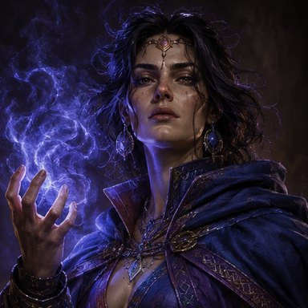

A: Figur groß (Hochformat 1 : 2), rechts neun Werte + Kampfkraft auf einen Blick. Links Helm, Waffe, Handschuhe, Ring; darunter Amulett, Brust, Gürtel, Nebenhand, Stiefel, Ring. Die Ausrüstung hängt nicht mehr „am Körper“, dafür sind die Werte immer sichtbar. Der Beutel bleibt voll sichtbar (10 × 6), alles passt ohne Scrollen.
B: wie heute aufgebaut (Ausrüstung links und rechts der Figur), die Figur wird höher und zeigt den ganzen Körper. Acht Werte stehen als Leiste direkt unter der Puppe. Vertrauter, aber die Werte stehen unter statt neben der Figur.
Mitschicken: die drei heutigen Porträts (assets/portraits/sorceress.jpg, assassin.jpg, barbarian.jpg) als Vorlage für Gesicht und Malstil. Ergebnis als assets/heroes.png (alle drei) oder drei Einzelbilder ins Repo legen bzw. schicken – ich schneide und binde sie ein. Vorlage im Repo: assets/reference/hero_fullbody_prompt.md.
Create ONE image, 1536x1024 px, divided into three equal vertical panels side by side (each exactly 512x1024, no gaps, no borders, no text). Each panel shows ONE full-body character standing, from head to feet, feet fully visible near the bottom edge, head in the upper fifth, the figure filling about 85 % of the panel height, centered. Slight three-quarter view, weight on one leg, calm but dangerous stance. Match the attached class portraits EXACTLY: same faces, same hair, same costume colors, same painterly dark-fantasy realism like Diablo II / Diablo IV key art, gritty, worn and dirty materials, scars, dramatic low-key lighting from one side, dark brown-black smoky background with a faint vignette, muted desaturated palette with small accents. Grim and serious, not heroic, not sexualized. The three panels must share the same camera height, the same light direction and the same color grading, so they look like one set. 1 (left) THE SORCERESS: the woman from the sorceress portrait – dark curly hair, thin gold circlet with a red gem on her forehead, deep blue robes and a high-collared cloak with tarnished gold embroidery, leather belt with small vials, worn boots under the robe hem. One hand raised with crackling violet-blue arcane lightning (the only bright accent), the other hand holding a tall gnarled wooden staff with a dull blue crystal. Cold, focused expression. 2 (middle) THE ASSASSIN: the woman from the assassin portrait – deep black hood shadowing the upper face, only lips and jaw lit, layered dark leather armor, wrapped forearms and shins, many small straps and buckles, a long dark scarf. A curved dagger in each hand held low and reversed, a third knife on the thigh. Lean, ready to strike, almost blending into the dark. 3 (right) THE BARBARIAN: the man from the barbarian portrait – long wild dark hair, braided beard, scarred bare chest and arms, heavy fur mantle over the shoulders, iron bracers, studded leather war-kilt, fur-wrapped boots. A huge two-handed battle axe resting on his shoulder or gripped at his side, mouth slightly open in a growl, veins on the arms. Plain dark background in every panel (no scenery, no floor line beyond a soft shadow under the feet), so the figures can be cut out cleanly.
Create ONE image, 768x1536 px, one full-body character standing, from head to feet, feet fully visible near the bottom edge, head in the upper fifth, figure filling about 85 % of the height, centered. Slight three-quarter view, weight on one leg, calm but dangerous stance. Match the attached class portraits EXACTLY: same face, same hair, same costume colors, same painterly dark-fantasy realism like Diablo II / Diablo IV key art, gritty, worn and dirty materials, scars, dramatic low-key lighting from one side, dark brown-black smoky background with a faint vignette, muted desaturated palette with small accents. Grim and serious, not heroic, not sexualized. THE SORCERESS: the woman from the sorceress portrait – dark curly hair, thin gold circlet with a red gem on her forehead, deep blue robes and a high-collared cloak with tarnished gold embroidery, leather belt with small vials, worn boots under the robe hem. One hand raised with crackling violet-blue arcane lightning (the only bright accent), the other hand holding a tall gnarled wooden staff with a dull blue crystal. Cold, focused expression. Plain dark background (no scenery, no floor line beyond a soft shadow under the feet), so the figure can be cut out cleanly.
Create ONE image, 768x1536 px, one full-body character standing, from head to feet, feet fully visible near the bottom edge, head in the upper fifth, figure filling about 85 % of the height, centered. Slight three-quarter view, weight on one leg, calm but dangerous stance. Match the attached class portraits EXACTLY: same face, same hair, same costume colors, same painterly dark-fantasy realism like Diablo II / Diablo IV key art, gritty, worn and dirty materials, scars, dramatic low-key lighting from one side, dark brown-black smoky background with a faint vignette, muted desaturated palette with small accents. Grim and serious, not heroic, not sexualized. THE ASSASSIN: the woman from the assassin portrait – deep black hood shadowing the upper face, only lips and jaw lit, layered dark leather armor, wrapped forearms and shins, many small straps and buckles, a long dark scarf. A curved dagger in each hand held low and reversed, a third knife on the thigh. Lean, ready to strike, almost blending into the dark. Plain dark background (no scenery, no floor line beyond a soft shadow under the feet), so the figure can be cut out cleanly.
Create ONE image, 768x1536 px, one full-body character standing, from head to feet, feet fully visible near the bottom edge, head in the upper fifth, figure filling about 85 % of the height, centered. Slight three-quarter view, weight on one leg, calm but dangerous stance. Match the attached class portraits EXACTLY: same face, same hair, same costume colors, same painterly dark-fantasy realism like Diablo II / Diablo IV key art, gritty, worn and dirty materials, scars, dramatic low-key lighting from one side, dark brown-black smoky background with a faint vignette, muted desaturated palette with small accents. Grim and serious, not heroic, not sexualized. THE BARBARIAN: the man from the barbarian portrait – long wild dark hair, braided beard, scarred bare chest and arms, heavy fur mantle over the shoulders, iron bracers, studded leather war-kilt, fur-wrapped boots. A huge two-handed battle axe resting on his shoulder or gripped at his side, mouth slightly open in a growl, veins on the arms. Plain dark background (no scenery, no floor line beyond a soft shadow under the feet), so the figure can be cut out cleanly.
text, letters, watermark, logo, frame, border, cartoon, anime, chibi, 3d render, plastic skin, bright colors, smooth glossy, cropped feet, cropped head, cut-off weapon, extra fingers, extra limbs, multiple characters per panel, scenery, sexualized pose.